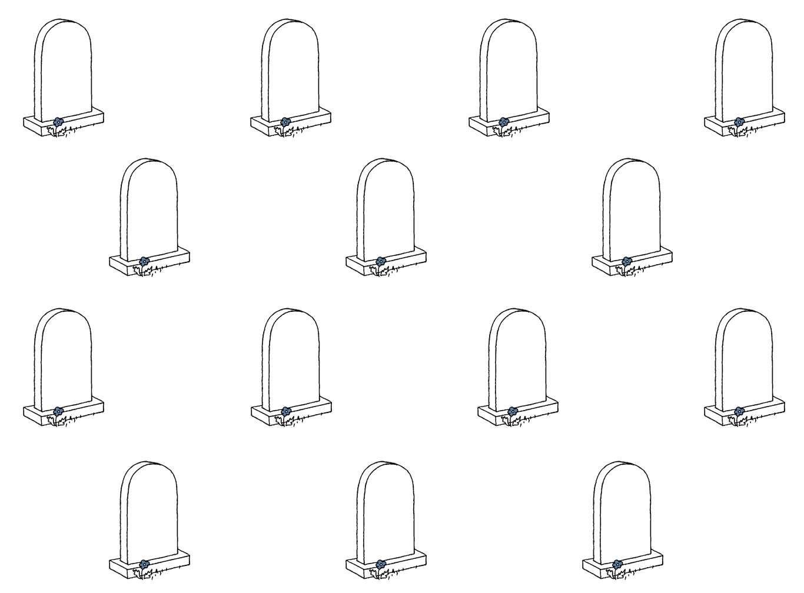
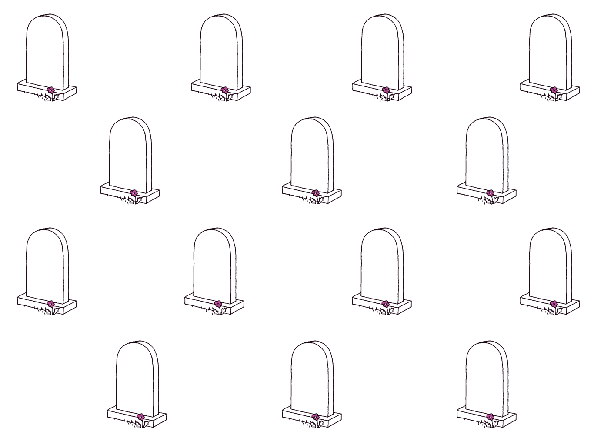

(kisses JULIET, takes out the poison)
Come, bitter conduct, come, unsavoury guide.
Thou desperate pilot, now at once run on
The dashing rocks thy seasick, weary bark.
Here's to my love!
(drinks the poison)
O true apothecary,
Thy drugs are quick. Thus with a kiss I die.
(ROMEO dies)

Thy lips are warm...
O happy dagger,
This is thy sheath. There rust
and let me die.
(stabs herself with ROMEO's
dagger and dies)